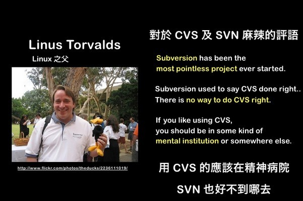
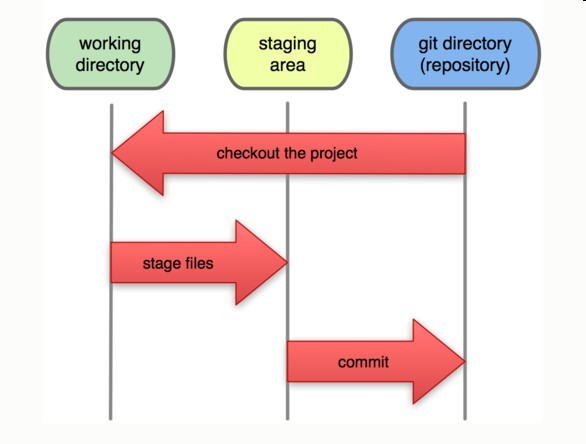
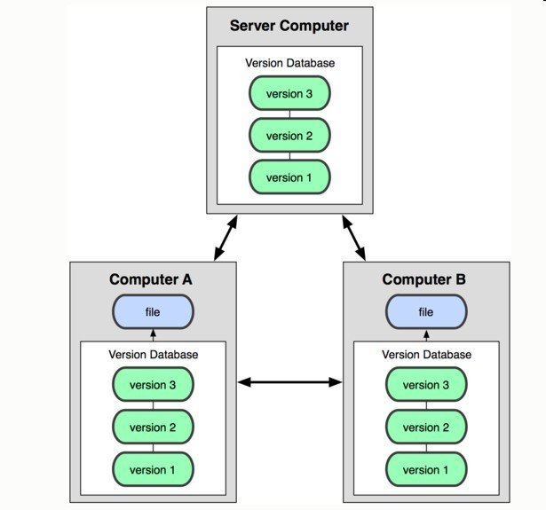
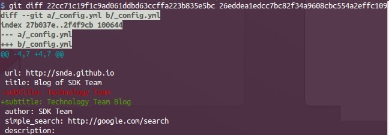
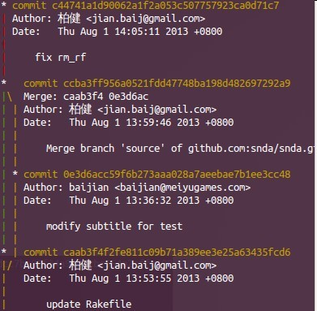
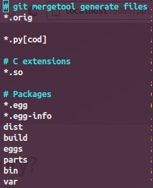
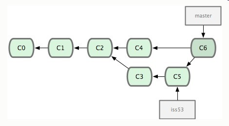
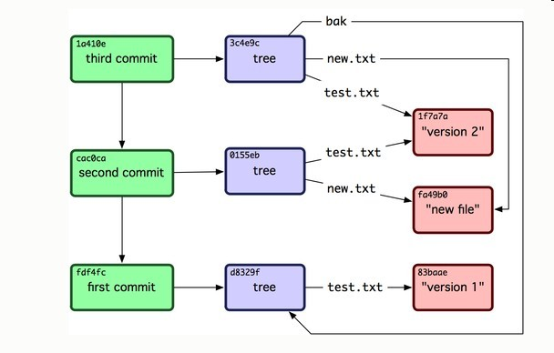
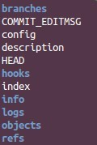
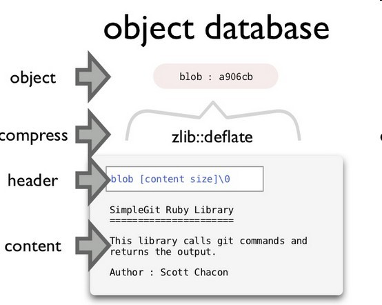

Your browser doesn't support the features required by impress.js, so you are presented with a simplified version of this presentation.
For the best experience please use the latest Chrome, Safari or Firefox browser.
What is GIT?
Git is not subversion...
Git is a content-addressable filesystem which is a very powerful tool that you can easily use as more than just a VCS.

Now
github.com
is the best and cool SCM system, it is very very popular.
Some features of GIT
* 1.Every project is a entire git repository and every client have all of the codes.
* 2.Fast and simple local branch(just a pointer), ofcourse it will save storage.
* 3.Develop your project without network(distributed).
Now let's try to
use Git
How to install?install guide
CentOS
yum install git
Ubuntu
sudo apt-get install git
Mac
brew install git
Windows?
Please do not use windows ^-^
How to config?
ssh-keygen -t rsa -C "baijian@meiyugames.com"
git config --global user.name "柏健"
git config --global user.email "baijian@meiyugames.com"
git config --global color.ui true
Init your first project:
mkdir demo & cd demo
git init
touch test.txt
git add test.txt
git commit -m "add test file"

Push your code to the central server:
git remote add origin git@github.com:baijian/demo.git
git push origin master

Update your project and modify.
git pull origin master
git status
git add test2.txt
git commit -m "add test2 file"
git push origin master

How to view the modification history?
git log --graph

How to exclude some files?
just add a file called .gitignore

How to do teamwork with git?

In git, the cost of adding a branch is less than svn, so you can use branch anytime you want.
At last, how git works
(plumbing and porcelain commands)
Understand objects in git.

tree blob commit tag
GIT_DIR .git

objects directory stores all the content for your database.(git objects)
index file stores your staging area information.
refs directory stores pointers into commit objects.(git references)
HEAD file points to the current branch you are in.
How objects are stored?

How to write codes?
header = type + ' ' + content.size + \0
body = content
new_content = header + body
sha = Digest::SHA1.hexdigest(new_content)
compressed = zlib::deflate(new_content)
path = ".git/objects/82/4aed...."
File.open(path, 'w') {|f| f.write(compressed)}
You should know what is markdown, and learn to write markdown file.
how to write our blog together?
ofcourse use git and each one's github account!
README